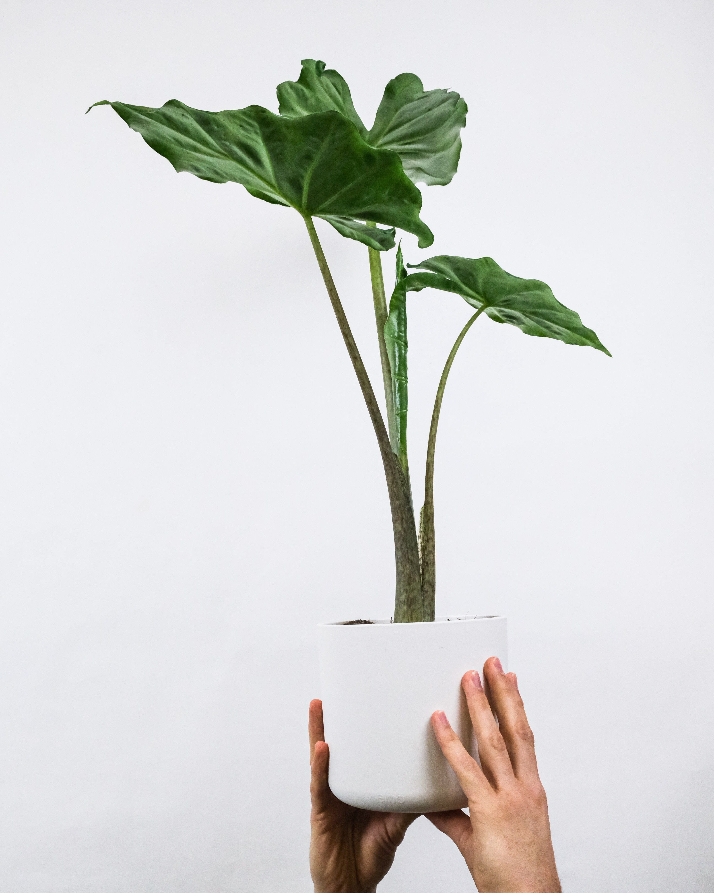

Monstera deliciosa

La Monstera deliciosa es una planta de interior popular por sus hojas grandes y vistosas. Para su cuidado, se recomienda lo siguiente:
- Colocarla en un lugar con luz indirecta y temperatura cálida.
- Regarla una vez por semana, asegurándose de que el suelo se seque antes de volver a regar.
- Fertilizarla cada dos semanas durante la temporada de crecimiento.
- Podarla regularmente para controlar su tamaño y darle forma.
Potus

El Potus es una planta de interior muy resistente y fácil de cuidar. Aquí tienes algunas recomendaciones:
- Colocarla en un lugar con luz brillante indirecta.
- Regarla cuando la capa superior del suelo esté seca, evitando encharcamientos.
- Fertilizarla mensualmente durante la primavera y el verano.
- Podarla para controlar su crecimiento y darle forma.
Alocasia

La Alocasia es una planta exótica de interior con hojas llamativas. Sigue estas pautas para cuidarla adecuadamente:
- Colocarla en un lugar luminoso pero evitando la luz solar directa.
- Regarla cuando la capa superior del suelo esté seca, manteniendo el suelo ligeramente húmedo.
- Fertilizarla cada cuatro semanas durante la primavera y el verano.
- Proporcionarle un ambiente húmedo pulverizando agua sobre sus hojas.